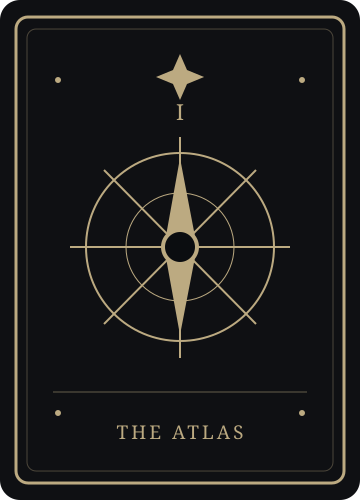
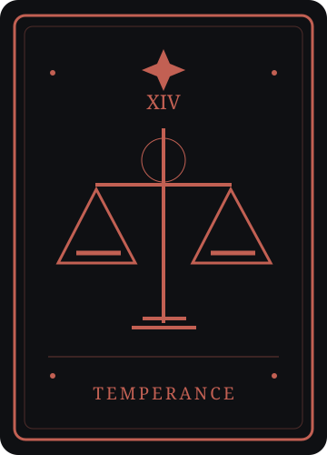
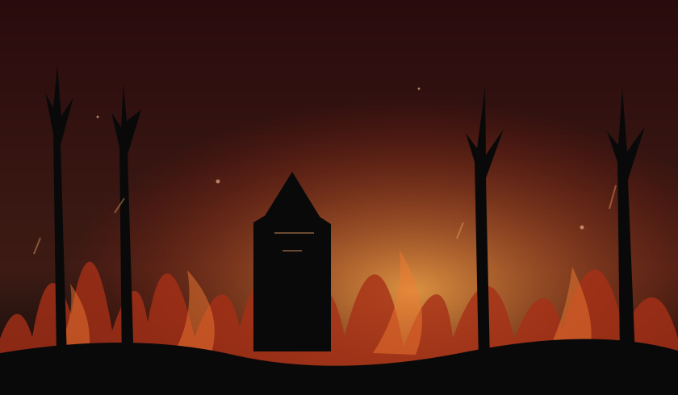
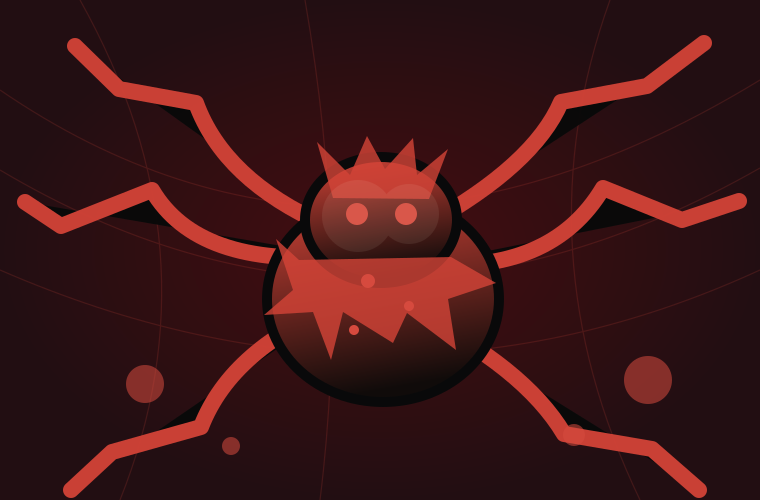
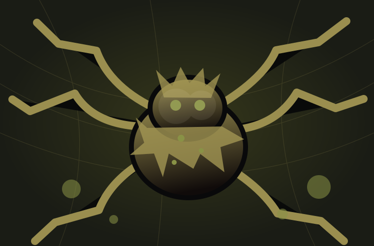

SCHON ERSCHIENEN
- Kalenderdaten werden geladen …
Wann kommt was wirklich? Der komplette Zeitplan zum Blutmond-Event – mit verständlichen Erklärungen statt kryptischen Trailern.
Kein Rätselraten mehr: Vergangene Veröffentlichungstage und kommende Ankündigungen getrennt. Stand wird geladen … (deutsche Zeit).
Wichtig: „Termin erreicht“ bedeutet nicht, dass alle Community-Belohnungen freigeschaltet sind. Der 13.10. ist Eventstart – die Tarotkarten und Long Derringer hängen von separaten Stufen ab. Die Website prüft keine Ingame-Server oder weltweiten Punkte automatisch.
ALLE 5 ITEMS ANSEHEN ↗Welche sind seit einem festen Release-Datum im Spiel? Welche brauchen erst eine Community-Freischaltung?
WANN? NOCH KEIN FESTES DATUM.
Wird erst mit Stufe 5 von All Hallows’ Cleave freigeschaltet. 13. Oktober = Eventstart, nicht automatisch Freigabe.
◌ TATSÄCHLICHER UNLOCK NICHT LIVE BESTÄTIGTWARUM STUFE 5? ↗
WANN? STUFE 1 – TERMIN OFFEN.
Neue Tarotkarte. Laut Crytek deckt sie versteckte Orte auf der Karte auf.
◌ UNLOCK-STATUS NICHT LIVE BESTÄTIGTCOMMUNITY-STUFEN ↗
WANN? STUFE 3 – TERMIN OFFEN.
Neue Tarotkarte. Sie stellt die zuletzt im Match verlorene Eigenschaft wieder her.
◌ UNLOCK-STATUS NICHT LIVE BESTÄTIGTCOMMUNITY-STUFEN ↗Neue Waffenfamilie aus dem ersten Chapter (Standard, Bayonet und Trauma).
08.09.2026CHAPTER 1 ANSEHEN ↗Neuer seltener Event-Gegenstand zusammen mit Inferno und den Firefighter-Supply-Inhalten.
06.10.2026CHAPTER 2 ANSEHEN ↗Warum bleibt bei den drei Community-Items „offen“ stehen? Crytek nennt die Stufen 1, 3 und 5 – aber keine Kalendertage. Ein automatischer Live-Status wäre ohne verifizierte Event-Daten irreführend. Offizielle Crytek-Patchnotes ↗
Der Trailer vom 29. September fasst viele Neuerungen zusammen. Im Spiel erschienen sie aber nicht alle am selben Tag.
Blood Testament · Update 2.9
Inferno & Flame Rifle ab 06.10. · Monster & Community-Event ab 13.10.
Nur Tage mit einer tatsächlichen Ankündigung. Klicke auf Details ansehen, um genau zu erfahren, was neu ist.
Das Event startet mit Update 2.9, der Burgess-Waffenfamilie und dem ersten Community-Auftrag, der später den Blutmond freischaltet.
Der offizielle Patch 2.9.1 brachte Fehlerbehebungen, zusätzliche Profil-Avatare für vorhandene DLCs und die neue Premium-Story-Challenge Cursed Kin.
Das ist der Start aus dem Trailer. Brennende Karten, starker Rauch, neue Spezial-Vorräte und die Flame Rifle gehören zu dieser ersten Veröffentlichung – die neuen Spinnengegner noch nicht.

ILLUSTRATION · INFERNODas separat kostenpflichtige DLC mit der legendären Jägerin The Protégée erschien am 7. Oktober. Kein zusätzlicher Gameplay-Chapter-Start.
Im DLC enthalten: The Protégée (Sophie Laurent), The Primrose (Mosin-Nagant-Skin), Skin Deep (Sparks Pistol), Skin Deep: Silencer, The White Fox (Ammo Box), Avatar und Profilrahmen. Dabei handelt es sich überwiegend um kosmetische Gegenstände.
OFFIZIELLE DLC-SEITE ↗Das Halloween-Community-Event mit fünf gemeinsamen Freischaltstufen beginnt. Gleichzeitig kommen Bileweaver, rote Bloodweaver und die überarbeiteten befallenen Orte.

SYMBOLILLUSTRATION · BLOODWEAVERTwitch kündigt Hunt-Belohnungen im Rahmen von Stream-o-Ween vom 26. Oktober bis 9. November an. Details zu einzelnen Rewards sollen zur Kampagne erscheinen.
Twitch erwähnt 128 Belohnungen im Zusammenhang mit der Aktion. Das bedeutet nicht, dass jeder Zuschauer 128 individuell garantierte Drops erhält. Die genaue Kampagnenliste und Teilnahmebedingungen sind in der Ankündigung noch nicht aufgeschlüsselt. Start- und Enduhrzeit werden dort ebenfalls nicht genannt.
TWITCH-BLOG ↗Der 9. November ist das von Twitch angegebene Enddatum. Eine konkrete deutsche Enduhrzeit ist nicht offiziell bestätigt.
Zur exakten Restlaufzeit der Drops bitte die Angaben in der dann aktiven Twitch-Kampagne prüfen. Diese Website schätzt keine Uhrzeit.
TWITCH-DROPS-KAMPAGNEN ↗Für den 8. Oktober 2026 ist in den geprüften offiziellen Ankündigungen kein eigenständiger großer Chapter-2-Release aufgeführt. Der Trailer bezog sich auf den 6. Oktober; die nächste große Inhaltswelle wurde für den 13. Oktober angekündigt.
Keine komplizierten Patchnote-Sätze: So kannst du die beiden Gegner verstehen – mit illustrativen Bildern zur Unterscheidung.

Spinnenartiger KI-Gegner, den viele von früheren Events kennen. In Chapter 2 wurde sein Aussehen überarbeitet; besonders seine Eier haben nun einen besser erkennbaren giftigen Farbton.
VERFÜGBAR AB EVENTSTART 13.10.Der aggressivere rote Verwandte. Er ist nur während des Blutmonds vorgesehen und kann bei seinen Sprungangriffen sowie durch seine Eier Blutungseffekte verursachen.
NUR BEI BLOOD MOONCompound bedeutet in Hunt ein Kartenareal mit einem Namen, etwa eine Farm, eine Mine oder eine Kirche. Über alle Maps gibt es 20 neue potenziell betroffene Orte. Die Spielrunde wählt daraus jeweils fünf – nicht alle 20 auf einmal.
Die Gegner-Bilder sind eigens gestaltete Symbolillustrationen, keine originalen Hunt-Screenshots oder exakten 3D-Modelle.
Das Community-Event beginnt am 13. Oktober. Die Inhalte werden nicht nach einem festen Tagesplan, sondern beim Erreichen von Punktegrenzen freigegeben. Kurze Übersicht oben ansehen ↗
Die Punktegrenzen stammen aus dem ausgelesenen Spiel-Datenbestand einer unabhängigen Community-Datenbank. Der aktuelle weltweite Punktestand ist hier nicht live verbunden. Eine abgelaufene Uhr allein schaltet keine Stufe frei.
Neue Tarotkarte. Sie kann zuvor verborgene Orte auf der Karte sichtbar machen.
TAROTKARTEIn den Community-Spieldaten stehen 5.000 Hunt-Dollar und 1.000 Eventpunkte als Stufenbelohnung.
DATENBANK-ANGABENeue Tarotkarte. Stellt die letzte im aktuellen Match verlorene Eigenschaft wieder her, auch in Verbindung mit Siphon.
TAROTKARTELaut Community-Datenbestand folgen 10.000 Hunt-Dollar und 2.500 Eventpunkte.
DATENBANK-ANGABENeues Tool als letzte gemeinschaftliche Freischaltung. Crytek nennt Stufe 5, jedoch keinen festen Kalendertag und keine Uhrzeit.
NEUES TOOL · TERMIN OFFENPunktegrenzen und die Pakete in Stufe 2/4: unabhängige Spieldaten-Datenbank. The Atlas, The Temperance und Long Derringer als Stufen 1/3/5: direkt durch Cryteks Patchnotes bestätigt. Die Tarot-Illustrationen sind eigene Gestaltungen.
26. Oktober – 9. November 2026. Vor dem angekündigten Kampagnenbeginn ist es normal, dass keine zugehörige Drop-Fortschrittsanzeige erscheint.
Twitch spricht im Event-Kontext von 128 Belohnungen. Das ist keine Zusage von 128 persönlichen Watchtime-Drops.
Der Trailer bewarb Chapter 2 insgesamt. Mit dem 6. Oktober begann der erste Inhaltsblock (unter anderem Inferno), während Crytek die Gegner und das Community-Event ausdrücklich für den 13. Oktober ankündigte.
Kein festes Datum in Cryteks Patchnotes. Die letzte Event-Stufe muss erst gemeinschaftlich erreicht werden; wie schnell das geschieht, kann diese statische Website nicht live ermitteln.
Chapter 2 wurde bereits am 6. Oktober von Crytek angekündigt. Am 13. Oktober kommt ein geplanter, dazugehöriger Inhaltsblock hinzu. Ob der Client dafür einen eigenen Patch erhält oder Inhalte serverseitig aktiviert werden, ist aus der Datumsankündigung allein nicht sicher abzuleiten.
Twitch nennt den Zeitraum vom 26. Oktober bis 9. November 2026. Das ist später als der Start des Chapter 2 und später als All Hallows’ Cleave.
Aktuell nicht. Sie aktualisiert Uhrzeit, Datum, HEUTE-Markierung und den Kalender selbstständig. Der globale Punktestand und aktuelle Community-Stage-Status sind ohne verlässliche API oder manuelle Pflege nicht bekannt.
Für die wichtigen Release-Tage hat Crytek keine verlässlich bestätigten Uhrzeiten in den verwendeten Ankündigungen angegeben. Die Seite zeigt deshalb bewusst „Uhrzeit offen“ statt einer Schätzung. Deutschland nutzt im Oktober MESZ, nach der Zeitumstellung am 25. Oktober MEZ.
Offizielle Release-Daten getrennt von einer unabhängigen Community-Datenbank. Keine „KI behauptet“-Termine.